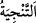
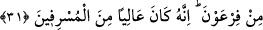

merhametlidir.
“Andolsun biz, İsrâîl oğullarını o alçaltıcı azâbdan” Zelîl kılan/alçaltan bir azaptan.
Firavun’un onları köleleştirip erkekleri ve oğullarını öldürmesinden kadınları ve kızları
hizmetçi olarak kullanmasından ve onlara ağır işlere mahkûm etmesinden, Kıptîleri
denizde boğarak Yâkub oğullarını “kurtardık.” “__WORD__/Tenciye” kurtarmak, serbest
bırakmak demektir. Hevân kelimesiyle ifâde edilen aşağılama, başkalarını küçümseyen
zorba insanlardan sâdır olan, yerilen bir durumdur.
31. Firavun’dan. Çünkü o, (insanları ezip) ululanan, sınırı aşanlardan biri idi.
“Firavun’dan” Bu ifâde azâb kelimesinden bedeldir. Yani Firavun azâb ve işkencede
çok ileri gidip haddi aştığı için azâbın bizzat kendisi sayılmış yahut muzâfın hazf
edilmesiyle bu terkip yapılmıştır. Firavun’un azâbından demektir. Yahut “el-mühîn”
kelimesinden hâldir. Mânâ bakımından, bu azâb Firavun’dan sâdır olup İsrâil
oğlullarına ondan ulaşmaktadır demektir.
“Çünkü o, (insanları ezip) ululanan”, kibirli “sınırı aşanlardan biri idi” Firavun
zulüm ve düşmanlıkta kendi aleyhlerine aşırı gidenlerden, küfür ve isyânda haddi
aşanlardandır.
Kâşifî şöyle demiştir: “Îman sınırını ihlâl eden kâfirlerden.” Firavun’un alçak, âdî ve
zelil olmasına rağmen ilahlık iddiâsında bulunması onun haddi aşmasındandır. Bu
iddiâsı sebebiyle Firavun kâfirlerin en azgın ve en azılı inkârcılarındandır.
Bu ifâde, belâgat açısından o müsrif idi, haddi aşmıştı; ifâdesinden daha ileridir.
Çünkü bu ifâde onun müsrifler ve haddi aşanlar zümresinden sayıldığına ve onlar
arasında meşhur olduğuna delâlet etmektedir. Bu ifâdeyle Firavun ve büyüklük taslayıp
haddi aşmada benzemiş olduğu Nemrud ve diğerleri gibi yerilmektedir. Ayrıca mü’mine
ihânet edip onu aşağılayanı Allah Teâlâ’nın helâk ve zelîl edeceği beyân edilmektedir.
“Allah kimi aşağılatırsa artık ona değer veren olmaz” (Hac, 22/18) Yine
düşmanların elinden kurtulmanın Allah’ın sevdiklerine olan büyük nimetlerinden olduğu
ifâde edilmektedir. Zîra hür bir insanın düşmana yenik düşüp ondan merhamet
beklemesi dünyânın en ağır musîbet ve belâlarındandır. Şu da bilinmelidir ki Allah
Teâlâ bir kimsenin dünyâ ve âhiret yüceliğini murâd edince önce onu bir takım belâ ve
musîbetlerle sınar, sonra da onu bu durumdan kurtarır.
Deve dikenini yatak yaptım yıllarca
Ve sonunda emelim yastıkla geldi bana